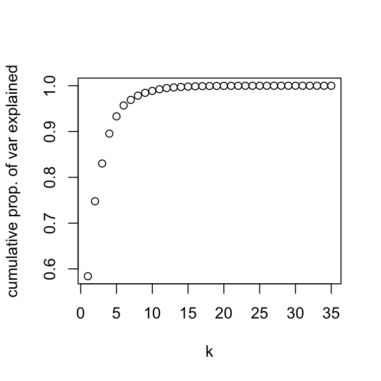
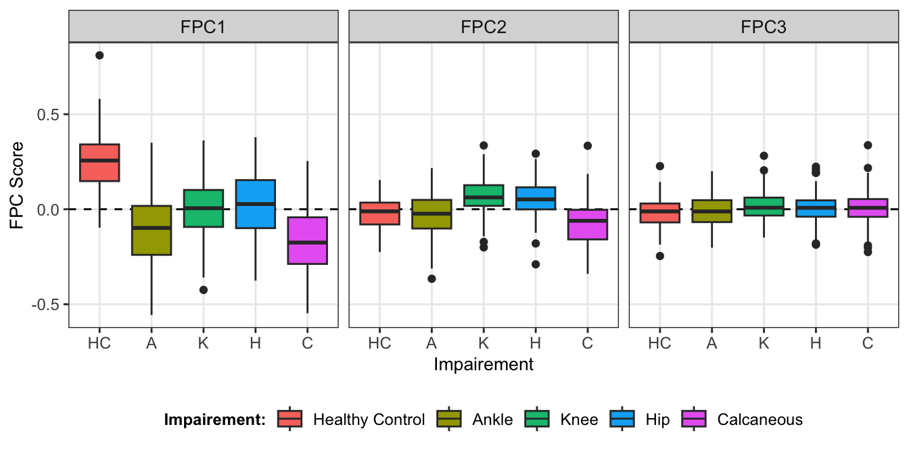
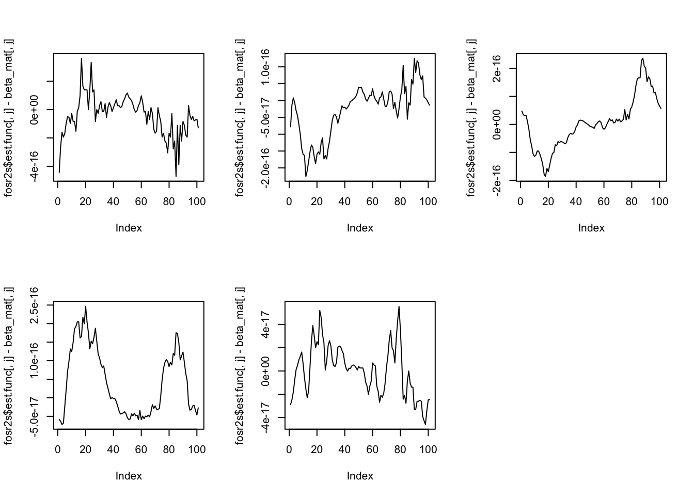
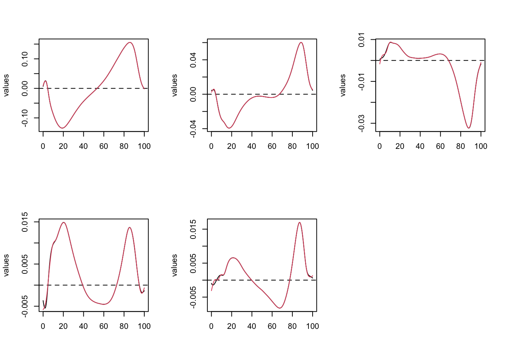
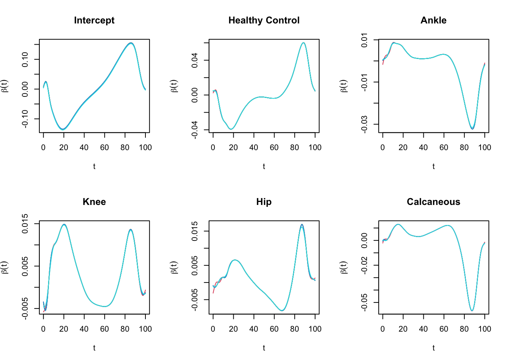
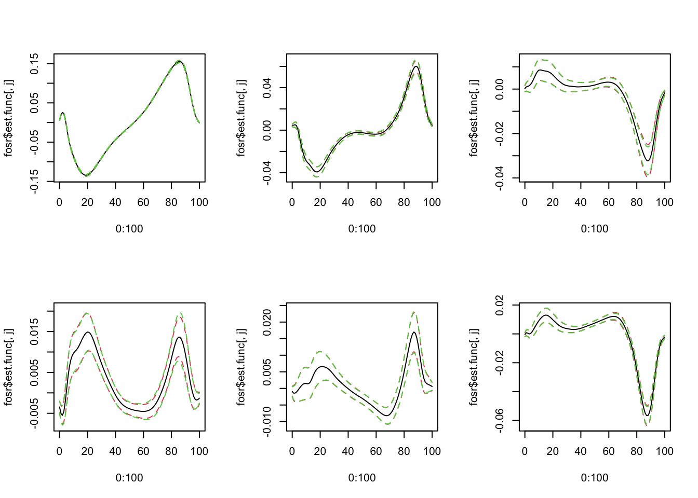
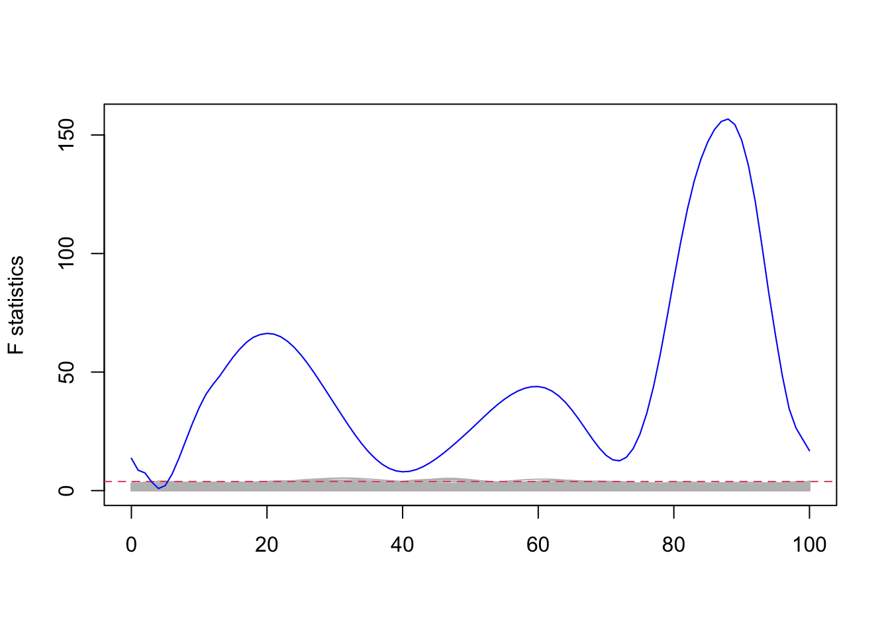
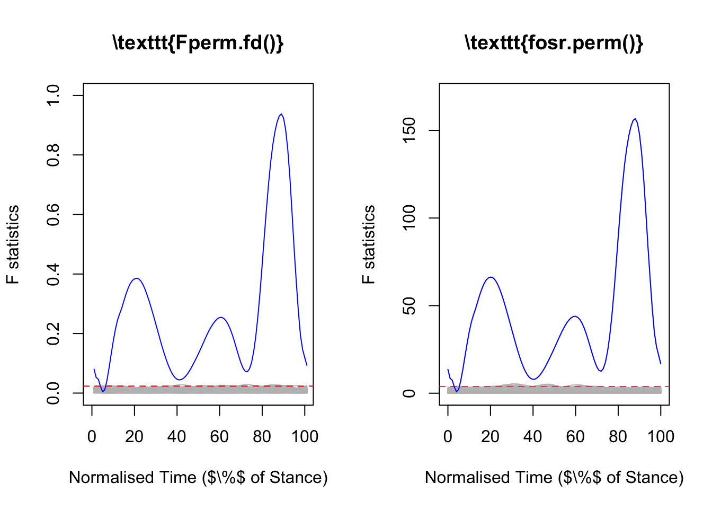

time_start <- Sys.time()Case Study Part 3: Impaired Movement
Analysis of impaired movement using FPCA and function-on-scalar regression.
Note: This script takes about \(4\) hours to run on my \(2019\) MacBook pro. This is primarily due to the bootstrap using \(1000\) bootstrap replicates. This number could be reduced or the bootstrap skipped to speed it up.
Set Up
Packages.
library(tidyverse) # CRAN v1.3.1
library(data.table) # CRAN v1.14.2
library(fda) # CRAN v5.5.1
library(refund) # CRAN v0.1-26Some graphics settings.
source(here::here("functions", "theme_gunning.R"))
theme_gunning()
theme_update(strip.text = element_text(size = 10),
axis.text = element_text(size = 9),
axis.title = element_text(size = 10),
plot.title = element_text(size = 11))Read in the data.
data_path <- here::here("chapter-06", "data", "interpolated-data.rds")
interpolated_data <- readRDS(data_path)
GRF_dataset_PRO_meta <- interpolated_data$GRF_dataset_PRO_meta
bspl_35 <- interpolated_data$bspl_35
GRF_dataset_PRO_meta[, uniqueN(SESSION_ID), by = SUBJECT_ID][, stopifnot(V1 == 1)]NULLCalculate average curve for each subject/ side.
# remove discrete values from dataset now we just working with basis coefficients.
GRF_dataset_PRO_meta[, paste0("time_",0:100) := NULL]
GRF_dataset_PRO_averages <- GRF_dataset_PRO_meta[,
as.list(apply(.SD, 2, mean)), # average basis coefficients of all trials
by = .(SUBJECT_ID, SESSION_ID, side, component, CLASS_LABEL, CLASS_LABEL_DETAILED, SEX, AGE, HEIGHT,
BODY_WEIGHT, BODY_MASS, SHOE_SIZE, AFFECTED_SIDE, SHOD_CONDITION, # defines averaging
ORTHOPEDIC_INSOLE, SPEED),
.SDcols = paste0("bspl4.",1:35)] # says which columns to averageOnly look at Anterior-Posterior (A-P) component. Look at affected side for impaired subjects. Look at right side for Healthy Controls.
Note: We will call this dt to make code easier to read in .qmd files (understand this is not best practice – more informative names should be used).
dt <- GRF_dataset_PRO_averages[component == "anterior_posterior"]
dt <- dt[(CLASS_LABEL == "HC" & side == "right") | (AFFECTED_SIDE == 1)]How many subjects?
(N <- nrow(dt))[1] 671Create fd object using coefficients and basis.
fdobj <- fd(coef = t(as.matrix(dt[, paste0("bspl4.",1:35)])), # basis coefs
basisobj = bspl_35) # basisFPCA
Perform fpca using pca.fd().
fpca <- pca.fd(fdobj = fdobj, nharm = 35)Look at variance explained:
plot(1:35, cumsum(fpca$varprop), xlab = "k", ylab = "cumulative prop. of var explained")
Figure of FPCA. Need to evaluate/ reshape FPCs to plot.
fpca_eval <- eval.fd(evalarg = 0:100, fpca$harmonics)
fpca_dt <- data.table(time = 0:100, fpca_eval)
fpca_dt_long <- melt.data.table(fpca_dt,
id.vars = "time",
measure.vars = paste0("PC",1:35))
mean_dt <- data.table(time = 0:100,
mean = c(eval.fd(0:100, fpca$meanfd)))
fpca_dt_long <- merge.data.table(x = fpca_dt_long,
y = mean_dt,
by = "time",
all.x = TRUE)
var_explained_dt <- data.table(
variable = paste0("PC", 1:35),
constant = (2 * sqrt(fpca$values))[1:35], # to add to fpcs
var_explained = paste0("$", round(fpca$varprop * 100, 1), "\\%$"))
fpca_dt_long <- merge.data.table(x = fpca_dt_long,
var_explained_dt,
by = "variable",
all.x = TRUE)
fpca_dt_long[, facet_label := paste0("F", variable, " (", var_explained, " of Variance)")]
anterior_posterior_plot <- ggplot(fpca_dt_long[variable %in% paste0("PC", 1:6)]) +
aes(x = time) +
facet_wrap(~ facet_label, ncol = 3) +
geom_line(aes(y = mean)) +
geom_point(aes(y = mean + constant * value), pch = "+", size = 1.5) +
geom_point(aes(y = mean - constant * value), pch = "-", size = 3) +
labs(x = "Normalised Time", y = "Force (BW)", title = "Anterior-Posterior")
anterior_posterior_plotPlot of scores vs. group labels. Again, extract scores and reshape data.
boxplots_dt <- data.table(class_label = dt$CLASS_LABEL,
sex = dt$SEX,
fpca$scores[, 1:3])
names(boxplots_dt)[-c(1:2)] <- paste0("FPC", 1:3)
boxplots_dt_lng <- melt.data.table(boxplots_dt, id.vars = c("class_label", "sex"))
boxplots_dt_lng[,
class_label_fill := factor(class_label, # re-label facets for strip texts.
levels = c("HC", "A", "K", "H", "C"),
labels = c("Healthy Control", "Ankle", "Knee", "Hip", "Calcaneous"))]
boxplots_dt_lng[, class_label := factor(class_label, levels = c("HC", "A", "K", "H", "C"))]
(boxplot_scores <- ggplot(boxplots_dt_lng) +
aes(x = class_label, y = value, fill = class_label_fill) +
geom_hline(yintercept = 0, lty = 2) +
facet_grid(~ variable) +
geom_boxplot() +
labs(y = "FPC Score", x = "Impairement", fill = "Impairement:") +
theme(legend.position = "bottom",
legend.title = element_text(face = "bold")))
Function-on-Scalar Regression
Two-Step Pointwise Estimation
Do manually with a loop and using fosr2s(). Note: The sum-to-zero constraint is achieved by contr.sum() command.
Manual Loop with lm()
dt[, CLASS_LABEL := factor(
CLASS_LABEL,
levels = c("HC", "A", "K", "H", "C"),
labels = c("Healthy Control", "Ankle", "Knee", "Hip", "Calcaneous"))]
fdobj_eval <- eval.fd(0:100, fdobj)
beta_mat <- matrix(NA, nrow = 101, ncol = 5)
for(tind in seq_along(0:100)) {
#print(paste0("t = ", c(0:100)[tind]))
df_lm <- data.frame(force_t = fdobj_eval[tind,], class_label = dt$CLASS_LABEL)
contrasts(df_lm$class_label) <- contr.sum(5)
test_lm <- lm(force_t ~ class_label, data = df_lm)
beta_mat[tind, ] <- coef(test_lm)
}
# and last column is obtained by -1 * sum of other predictors (constraint)
beta_mat <- cbind(beta_mat, - apply(beta_mat[,-1], 1, sum))
colnames(beta_mat) <- c("Intercept", rownames(contrasts(df_lm$class_label)))fosr2s()
# can also do pointwise regressions with refund; this smoooths not interpolates though.
fosr2s <- fosr2s(Y = t(fdobj_eval),
X = model.matrix(~ class_label, data = df_lm),
argvals = 0:100,
nbasis = 35)
fosr2s$est.func <- cbind(fosr2s$est.func, - apply(fosr2s$est.func[,-1], 1, sum))
colnames(fosr2s$est.func) <- colnames(beta_mat)
colnames(fosr2s$se.func) <- colnames(fosr2s$est.func)[1:5]Compare by plotting differences in estimates:
par(mfrow = c(2, 3))
for(j in 1:5) {
plot(fosr2s$est.func[,j] - beta_mat[, j], type = "l") # plot difference
} # identical
^ differences of order \(10^{-16}\) – identical.
P-GLS (fosr())
Note: The sum-to-zero constraint is achieved by using the con argument, a vector saying which columns of design matrix should sum to zero.
modmat <- cbind(Intercept = 1, model.matrix(~ factor(dt$CLASS_LABEL) - 1))
(constraints = matrix(c(0, 1, 1, 1, 1, 1), 1)) # vector says all betas sum to zero [,1] [,2] [,3] [,4] [,5] [,6]
[1,] 0 1 1 1 1 1colnames(modmat)[-1] <- stringr::str_remove(colnames(modmat)[-1],
pattern = "factor\\(dt\\$CLASS_LABEL\\)")
fosr <- fosr(fdobj = fdobj,
X = modmat, # design matrix
con = constraints, # sum-to-zero constraints
method = "GLS", # (Reiss et al., 2010)
argvals = 0:100)
colnames(fosr$se.func) <- colnames(fosr$est.func) <- colnames(modmat)FAMM
We add an id column with an indicator for each row. This would allow us to model \(\epsilon(t)\) as a smooth residual in the FAMM approach, using basis functions and random effects.
dt_copy <- copy(dt)
contrasts(dt_copy$CLASS_LABEL) <- contr.sum(n = 5)
X_constraint <- model.matrix(~ CLASS_LABEL, data = dt_copy)
colnames(X_constraint) <- c("Intercept", rownames(contrasts(dt_copy$CLASS_LABEL))[1:4])
pffr_df <- as.data.frame(X_constraint)
pffr_df$id <- factor(seq_len(N)) # id for each curve = smooth error
pffr_df$Y <- t(fdobj_eval)
names(pffr_df)[2] <- "Healthy_Control"This is how it would be achieved. However, too complicated to fit – we do not evaluate this chunk:
pffr_fit <- pffr(formula = Y ~ Healthy_Control + Ankle + Knee + Hip+ s(id, bs = "re"),
data = pffr_df,
yind = 0:100,
algorithm = "bam",
bs.yindex = list(bs="ps", k=35, m=c(2, 1)),
bs.int = list(bs="ps", k=35, m=c(2, 1)))Instead, we fit with assuming \(\epsilon_{it} \sim N(0, \sigma)\).
pffr_fit <- pffr(formula = Y ~ Healthy_Control + Ankle + Knee + Hip,
data = pffr_df,
yind = 0:100,
algorithm = "bam",
bs.yindex = list(bs="ps", k=35, m=c(2, 1)),
bs.int = list(bs="ps", k=35, m=c(2, 1)))P-OLS (fRegress())
Three (perhaps strange) notes on this implementation:
We can use the
contr.sum()version of the design matrix to construct a suitable design matrix (same as last fit) to enforce sum-to-zero constraint. However, we first use the “hack” provided in Ramsay, Hooker and Graves p. 148 of augmenting a “fake” observation. Then we usecontr.sum().Using
fRegress(),xfdlistis typically a list with each element containing the vector that would be a column of the standard design matrix. However, to manually usepredict.fRegress(), for some reason we need to create each scalar covariate as a constant “function” using a constant basis (i.e.,xfdliststill a list but now each element is anfdobject representing the scalar covariates).We manually do 10-fold cross-validation to choose smoothing parameter. The reason being is that
fRegress.CV()only does leave-one-out which takes too long to run on this dataset.
impairement_classes <- unique(dt$CLASS_LABEL)
constant_basis <- create.constant.basis(rangeval = c(0, 100))
# manually setting up xfdlist with "hack" to enforce sum to zero:
p <- length(impairement_classes) + 1
xfd_list <- vector(mode = "list", length = p)
names(xfd_list) <- c("Intercept", as.character(impairement_classes))
xfd_list_constant_coefs <- c(rep(1, times = N), 0)
xfd_list[[1]] <- fd(coef = matrix(xfd_list_constant_coefs, nrow = 1, ncol = N + 1), basisobj = constant_basis)
for (j in 2:p) {
xj <- (dt$CLASS_LABEL == impairement_classes[j-1])
xfd_list[[j]] <- fd(coef = matrix(data = c(xj, 1), nrow = 1, ncol = N + 1), basisobj = constant_basis)
}
coefs_tmp <- fdobj$coefs
coefs_augmented <- cbind(coefs_tmp, matrix(data = 0, nrow = fdobj$basis$nbasis, 1))
Y_fd_augmented <- fd(coef = coefs_augmented,
basisobj = fdobj$basis) # (RHG p. 148)# Set up basis for predictor and regression functions:
# use same basis as data
betas_basis <- fdobj$basis
# Let's do CV to choose smoothing parameter:
log_lambda_seq <- seq(from = -10, to = 10, by = 1)
SSE_cv_vec <- vector(mode = "numeric", length = length(log_lambda_seq))
# Do shuffling of dataset prior to cross-validation
ind_obs <- seq_len(N)
set.seed(1)
ind_obs_shuffled <- sample(ind_obs)
Y_fd_augmented_shuffled <- Y_fd_augmented[c(ind_obs_shuffled, N + 1),]
x_fd_list_shuffled <- lapply(xfd_list, function(x) {x[c(ind_obs_shuffled, N + 1)]})
# Create folds:
nfolds <- 10
cv_obs <- cut(seq_len(N), labels = FALSE, breaks = nfolds)
folds <- unique(cv_obs)
stopifnot(seq_len(nfolds) == folds)
SSE_mat <- matrix(NA, nrow = nfolds, ncol = length(log_lambda_seq))
for(k in seq_along(log_lambda_seq)) {
# Create parameters using same lambda value:
cat("-------------------------------------------\n")
print(paste0("lambda = ", 10^log_lambda_seq[k]))
cat("-------------------------------------------\n")
beta_fdPar_k <- fdPar(fdobj = betas_basis, Lfdobj = 2, lambda = 10^log_lambda_seq[k])
beta_list_k <- replicate(n = p, expr = beta_fdPar_k, simplify = FALSE)
print("Doing Cross-Validation:")
for(fold_ind in folds) {
print(paste("Fold", fold_ind, "of", nfolds))
# Do test:train split.
train_inds <- which(cv_obs != fold_ind)
test_inds <- which(cv_obs == fold_ind)
# Do training:
Y_fd_augmented_train <- Y_fd_augmented_shuffled[c(train_inds, N+1),]
x_fd_list_train <- lapply(x_fd_list_shuffled, function(x) {x[c(train_inds, N+1)]})
fRegress_fit <- fRegress(Y_fd_augmented_train,
xfdlist = x_fd_list_train,
betalist = beta_list_k)
# Do testing
Y_fd_test <- Y_fd_augmented_shuffled[test_inds,]
x_fd_list_test <- lapply(x_fd_list_shuffled, function(x) {x[c(test_inds)]})
Y_fd_test_hat <- predict.fRegress(object = fRegress_fit, newdata = x_fd_list_test)
err_fd_test <- Y_fd_test - Y_fd_test_hat
# Store Cross-Validated Errors
SSE_mat[fold_ind, k] <- sum(inprod(err_fd_test^2))
}
}-------------------------------------------
[1] "lambda = 1e-10"
-------------------------------------------
[1] "Doing Cross-Validation:"
[1] "Fold 1 of 10"
[1] "Fold 2 of 10"
[1] "Fold 3 of 10"
[1] "Fold 4 of 10"
[1] "Fold 5 of 10"
[1] "Fold 6 of 10"
[1] "Fold 7 of 10"
[1] "Fold 8 of 10"
[1] "Fold 9 of 10"
[1] "Fold 10 of 10"
-------------------------------------------
[1] "lambda = 1e-09"
-------------------------------------------
[1] "Doing Cross-Validation:"
[1] "Fold 1 of 10"
[1] "Fold 2 of 10"
[1] "Fold 3 of 10"
[1] "Fold 4 of 10"
[1] "Fold 5 of 10"
[1] "Fold 6 of 10"
[1] "Fold 7 of 10"
[1] "Fold 8 of 10"
[1] "Fold 9 of 10"
[1] "Fold 10 of 10"
-------------------------------------------
[1] "lambda = 1e-08"
-------------------------------------------
[1] "Doing Cross-Validation:"
[1] "Fold 1 of 10"
[1] "Fold 2 of 10"
[1] "Fold 3 of 10"
[1] "Fold 4 of 10"
[1] "Fold 5 of 10"
[1] "Fold 6 of 10"
[1] "Fold 7 of 10"
[1] "Fold 8 of 10"
[1] "Fold 9 of 10"
[1] "Fold 10 of 10"
-------------------------------------------
[1] "lambda = 1e-07"
-------------------------------------------
[1] "Doing Cross-Validation:"
[1] "Fold 1 of 10"
[1] "Fold 2 of 10"
[1] "Fold 3 of 10"
[1] "Fold 4 of 10"
[1] "Fold 5 of 10"
[1] "Fold 6 of 10"
[1] "Fold 7 of 10"
[1] "Fold 8 of 10"
[1] "Fold 9 of 10"
[1] "Fold 10 of 10"
-------------------------------------------
[1] "lambda = 1e-06"
-------------------------------------------
[1] "Doing Cross-Validation:"
[1] "Fold 1 of 10"
[1] "Fold 2 of 10"
[1] "Fold 3 of 10"
[1] "Fold 4 of 10"
[1] "Fold 5 of 10"
[1] "Fold 6 of 10"
[1] "Fold 7 of 10"
[1] "Fold 8 of 10"
[1] "Fold 9 of 10"
[1] "Fold 10 of 10"
-------------------------------------------
[1] "lambda = 1e-05"
-------------------------------------------
[1] "Doing Cross-Validation:"
[1] "Fold 1 of 10"
[1] "Fold 2 of 10"
[1] "Fold 3 of 10"
[1] "Fold 4 of 10"
[1] "Fold 5 of 10"
[1] "Fold 6 of 10"
[1] "Fold 7 of 10"
[1] "Fold 8 of 10"
[1] "Fold 9 of 10"
[1] "Fold 10 of 10"
-------------------------------------------
[1] "lambda = 1e-04"
-------------------------------------------
[1] "Doing Cross-Validation:"
[1] "Fold 1 of 10"
[1] "Fold 2 of 10"
[1] "Fold 3 of 10"
[1] "Fold 4 of 10"
[1] "Fold 5 of 10"
[1] "Fold 6 of 10"
[1] "Fold 7 of 10"
[1] "Fold 8 of 10"
[1] "Fold 9 of 10"
[1] "Fold 10 of 10"
-------------------------------------------
[1] "lambda = 0.001"
-------------------------------------------
[1] "Doing Cross-Validation:"
[1] "Fold 1 of 10"
[1] "Fold 2 of 10"
[1] "Fold 3 of 10"
[1] "Fold 4 of 10"
[1] "Fold 5 of 10"
[1] "Fold 6 of 10"
[1] "Fold 7 of 10"
[1] "Fold 8 of 10"
[1] "Fold 9 of 10"
[1] "Fold 10 of 10"
-------------------------------------------
[1] "lambda = 0.01"
-------------------------------------------
[1] "Doing Cross-Validation:"
[1] "Fold 1 of 10"
[1] "Fold 2 of 10"
[1] "Fold 3 of 10"
[1] "Fold 4 of 10"
[1] "Fold 5 of 10"
[1] "Fold 6 of 10"
[1] "Fold 7 of 10"
[1] "Fold 8 of 10"
[1] "Fold 9 of 10"
[1] "Fold 10 of 10"
-------------------------------------------
[1] "lambda = 0.1"
-------------------------------------------
[1] "Doing Cross-Validation:"
[1] "Fold 1 of 10"
[1] "Fold 2 of 10"
[1] "Fold 3 of 10"
[1] "Fold 4 of 10"
[1] "Fold 5 of 10"
[1] "Fold 6 of 10"
[1] "Fold 7 of 10"
[1] "Fold 8 of 10"
[1] "Fold 9 of 10"
[1] "Fold 10 of 10"
-------------------------------------------
[1] "lambda = 1"
-------------------------------------------
[1] "Doing Cross-Validation:"
[1] "Fold 1 of 10"
[1] "Fold 2 of 10"
[1] "Fold 3 of 10"
[1] "Fold 4 of 10"
[1] "Fold 5 of 10"
[1] "Fold 6 of 10"
[1] "Fold 7 of 10"
[1] "Fold 8 of 10"
[1] "Fold 9 of 10"
[1] "Fold 10 of 10"
-------------------------------------------
[1] "lambda = 10"
-------------------------------------------
[1] "Doing Cross-Validation:"
[1] "Fold 1 of 10"
[1] "Fold 2 of 10"
[1] "Fold 3 of 10"
[1] "Fold 4 of 10"
[1] "Fold 5 of 10"
[1] "Fold 6 of 10"
[1] "Fold 7 of 10"
[1] "Fold 8 of 10"
[1] "Fold 9 of 10"
[1] "Fold 10 of 10"
-------------------------------------------
[1] "lambda = 100"
-------------------------------------------
[1] "Doing Cross-Validation:"
[1] "Fold 1 of 10"
[1] "Fold 2 of 10"
[1] "Fold 3 of 10"
[1] "Fold 4 of 10"
[1] "Fold 5 of 10"
[1] "Fold 6 of 10"
[1] "Fold 7 of 10"
[1] "Fold 8 of 10"
[1] "Fold 9 of 10"
[1] "Fold 10 of 10"
-------------------------------------------
[1] "lambda = 1000"
-------------------------------------------
[1] "Doing Cross-Validation:"
[1] "Fold 1 of 10"Warning in `^.fd`(err_fd_test, 2): The maximum error exceeds the tolerance
level.[1] "Fold 2 of 10"
[1] "Fold 3 of 10"
[1] "Fold 4 of 10"
[1] "Fold 5 of 10"
[1] "Fold 6 of 10"
[1] "Fold 7 of 10"
[1] "Fold 8 of 10"
[1] "Fold 9 of 10"
[1] "Fold 10 of 10"
-------------------------------------------
[1] "lambda = 10000"
-------------------------------------------
[1] "Doing Cross-Validation:"
[1] "Fold 1 of 10"Warning in `^.fd`(err_fd_test, 2): The maximum error exceeds the tolerance
level.[1] "Fold 2 of 10"
[1] "Fold 3 of 10"
[1] "Fold 4 of 10"
[1] "Fold 5 of 10"
[1] "Fold 6 of 10"
[1] "Fold 7 of 10"
[1] "Fold 8 of 10"
[1] "Fold 9 of 10"
[1] "Fold 10 of 10"
-------------------------------------------
[1] "lambda = 1e+05"
-------------------------------------------
[1] "Doing Cross-Validation:"
[1] "Fold 1 of 10"Warning in `^.fd`(err_fd_test, 2): The maximum error exceeds the tolerance
level.[1] "Fold 2 of 10"
[1] "Fold 3 of 10"
[1] "Fold 4 of 10"
[1] "Fold 5 of 10"
[1] "Fold 6 of 10"
[1] "Fold 7 of 10"
[1] "Fold 8 of 10"
[1] "Fold 9 of 10"
[1] "Fold 10 of 10"
-------------------------------------------
[1] "lambda = 1e+06"
-------------------------------------------
[1] "Doing Cross-Validation:"
[1] "Fold 1 of 10"Warning in `^.fd`(err_fd_test, 2): The maximum error exceeds the tolerance
level.[1] "Fold 2 of 10"
[1] "Fold 3 of 10"
[1] "Fold 4 of 10"
[1] "Fold 5 of 10"
[1] "Fold 6 of 10"
[1] "Fold 7 of 10"
[1] "Fold 8 of 10"
[1] "Fold 9 of 10"
[1] "Fold 10 of 10"
-------------------------------------------
[1] "lambda = 1e+07"
-------------------------------------------
[1] "Doing Cross-Validation:"
[1] "Fold 1 of 10"
[1] "Fold 2 of 10"
[1] "Fold 3 of 10"
[1] "Fold 4 of 10"
[1] "Fold 5 of 10"
[1] "Fold 6 of 10"
[1] "Fold 7 of 10"
[1] "Fold 8 of 10"
[1] "Fold 9 of 10"
[1] "Fold 10 of 10"
-------------------------------------------
[1] "lambda = 1e+08"
-------------------------------------------
[1] "Doing Cross-Validation:"
[1] "Fold 1 of 10"
[1] "Fold 2 of 10"
[1] "Fold 3 of 10"
[1] "Fold 4 of 10"
[1] "Fold 5 of 10"
[1] "Fold 6 of 10"
[1] "Fold 7 of 10"
[1] "Fold 8 of 10"
[1] "Fold 9 of 10"
[1] "Fold 10 of 10"
-------------------------------------------
[1] "lambda = 1e+09"
-------------------------------------------
[1] "Doing Cross-Validation:"
[1] "Fold 1 of 10"
[1] "Fold 2 of 10"
[1] "Fold 3 of 10"
[1] "Fold 4 of 10"
[1] "Fold 5 of 10"
[1] "Fold 6 of 10"
[1] "Fold 7 of 10"
[1] "Fold 8 of 10"
[1] "Fold 9 of 10"
[1] "Fold 10 of 10"
-------------------------------------------
[1] "lambda = 1e+10"
-------------------------------------------
[1] "Doing Cross-Validation:"
[1] "Fold 1 of 10"
[1] "Fold 2 of 10"
[1] "Fold 3 of 10"
[1] "Fold 4 of 10"
[1] "Fold 5 of 10"
[1] "Fold 6 of 10"
[1] "Fold 7 of 10"
[1] "Fold 8 of 10"
[1] "Fold 9 of 10"
[1] "Fold 10 of 10"SSE_vec <- apply(SSE_mat, 2, sum) # sum SSE over folds
# plot log(lambda) vs. SSE
par(mfrow = c(1, 2))
plot(log_lambda_seq, log(SSE_vec), type = "b", pch = 20)
# zoom in:
plot(log_lambda_seq[1:13], log(SSE_vec)[1:13], type = "b", pch = 20)# take log(lambda) that minimises SSE CV"
(log_lambda_best <- log_lambda_seq[which.min(SSE_vec)])[1] 1# Do a model fit with best lambda:
beta_fdPar_best <- fdPar(fdobj = betas_basis, Lfdobj = 2, lambda = 10^log_lambda_best)
beta_list_best <- replicate(n = p, expr = beta_fdPar_best, simplify = FALSE)
names(beta_list_best) <- names(xfd_list)
fRegress_best_fit <- fRegress(Y_fd_augmented,
xfdlist = xfd_list,
betalist = beta_list_best)However this “hack” does not allow for correct CI estimates. Therefore we re-do fRegress this time based on setting up xfdlist using our design matrix X_constraint that was set up earlier.
p2 <- length(impairement_classes)
xfd_list_2 <- vector(mode = "list", length = p2)
names(xfd_list_2) <- colnames(X_constraint)
for (j in 1:p2) {
xfd_list_2[[j]] <- fd(coef = matrix(data = X_constraint[, j], nrow = 1, ncol = N), basisobj = constant_basis)
}
beta_fdPar_best <- fdPar(fdobj = betas_basis, Lfdobj = 2, lambda = 10^log_lambda_best)
beta_list_best_2 <- replicate(n = p2, expr = beta_fdPar_best, simplify = FALSE)
names(beta_list_best_2) <- names(xfd_list_2)
fRegress_best_fit_2 <- fRegress(fdobj,
xfdlist = xfd_list_2,
betalist = beta_list_best_2)
par(mfrow = c(2, 3))
for(j in c("Intercept", "Healthy Control", "Ankle", "Knee", "Hip")) {
plot(fRegress_best_fit_2$betaestlist[[j]]$fd, col = 1)
lines(fRegress_best_fit$betaestlist[[j]]$fd, col = 2)
} # close but still different
# And construct confidence intervals
y2cMap <- smooth.basis(argvals = 0:100,
y = eval.fd(0:100, fdobj[1]),
fdParobj = fdPar(fdobj$basis, Lfdobj = 2, lambda = 10^-10))$y2cMap # didn't have smooth.basis stored.
# Calculate residual error covariance for getting CIs
err_fd_2 <- fRegress_best_fit_2$yhatfdobj - fRegress_best_fit_2$yfdobj
err_fd_cov_bifd_2 <- var.fd(fdobj1 = err_fd_2, fdobj2 = err_fd_2)
err_fd_cov_eval_2 <- eval.bifd(sevalarg = 0:100, tevalarg = 0:100, err_fd_cov_bifd_2)
# Get Standard Errors for fRegress()
# takes a while!
fRegress_best_fit_stderrList_2 <- fRegress.stderr(y = fRegress_best_fit_2,
y2cMap = y2cMap,
SigmaE = err_fd_cov_eval_2)
names(fRegress_best_fit_stderrList_2$betastderrlist) <- names(fRegress_best_fit_2$betaestlist)
Comparison:
Compare different point estimates:
pffr_coefs <- sapply(coef(pffr_fit)[["smterms"]], function(x) x[["value"]])using seWithMean for s(yindex.vec) .colnames(pffr_coefs) <- stringr::str_remove(colnames(pffr_coefs), "\\(yindex\\)")
colnames(pffr_coefs)[colnames(pffr_coefs) == "Healthy_Control"] <- "Healthy Control"
pffr_coefs <- cbind(pffr_coefs, Calcaneous = - apply(pffr_coefs[,-1], 1, sum))
pffr_yind <- coef(pffr_fit)[["smterms"]][[1]][["coef"]][["yindex.vec"]]using seWithMean for s(yindex.vec) .par(mfrow = c(2, 3))
for(j in c("Intercept", "Healthy Control", "Ankle", "Knee", "Hip", "Calcaneous")) {
plot(0:100, beta_mat[,j], type = "l", xlab = expression(t), ylab = expression(beta(t)))
title(j)
lines(fRegress_best_fit$betaestlist[[j]]$fd, col = 2)
lines(fRegress_best_fit_2$betaestlist[[j]]$fd, col = 3)
lines(0:100, fosr$est.func[, j], col = 4)
lines(pffr_yind, pffr_coefs[,j], col = 5)
}
Compare pointwise CIs for a single coefficient.
Note: Because \(\beta_5(t)\) is only implicitly defined as \(-\sum_a \beta_a (t)\) using some of the approaches, it isslightly more difficult to get CIs for this parameter as we need to know the covariance between other parameters (e.g., \(\text{Cov}(\beta_{1}(s), \beta_{2}(t))\)). However fosr() provides this automatically. We do not try to calculate it here.
# Let's extract point wise confidence intervals
j <- "Hip"
pffr_se_j <- coef(pffr_fit)[["smterms"]][[paste0(j, "(yindex)")]][["se"]]using seWithMean for s(yindex.vec) .# create data for plot:
plot_hip_dt <- data.table(t = c(0:100, 0:100, 0:100, pffr_yind),
model = c(rep("P-GLS (\\texttt{fosr()})", 101),
rep("Two-Step (\\texttt{fosr2s()})", 101),
rep("P-OLS (\\texttt{fRegress()})", 101),
rep("FAMM (\\texttt{pffr()})", length(pffr_yind))
),
point_est = c(fosr$est.func[, j],
fosr2s$est.func[, j],
eval.fd(0:100, fRegress_best_fit_2$betaestlist[[j]]$fd),
pffr_coefs[,j]),
lower = c(fosr$est.func[, j] - 2 * fosr$se.func[, j],
fosr2s$est.func[, j] - 2 * fosr2s$se.func[, j],
eval.fd(0:100, fRegress_best_fit_2$betaestlist[[j]]$fd) - 2 * eval.fd(0:100, fRegress_best_fit_stderrList_2$betastderrlist[[j]]),
pffr_coefs[, j] - 2 * pffr_se_j),
upper = c(fosr$est.func[, j] + 2 * fosr$se.func[, j],
fosr2s$est.func[, j] + 2 * fosr2s$se.func[, j],
eval.fd(0:100, fRegress_best_fit_2$betaestlist[[j]]$fd) + 2 * eval.fd(0:100, fRegress_best_fit_stderrList_2$betastderrlist[[j]]),
pffr_coefs[, j] + 2 * pffr_se_j))
compare_plot <- ggplot(data = plot_hip_dt) +
aes(x = t, y = point_est) +
facet_wrap(~ model, nrow = 2) +
geom_line() +
geom_line(aes(y= lower), linetype = 3, size = 0.65) +
geom_line(aes(y= upper), linetype = 3, size = 0.65) +
labs(y = "$\\beta_4 (t)$ Impaired: Hip",
x = "Normalised Time ($\\%$ of Stance)")Warning: Using `size` aesthetic for lines was deprecated in ggplot2 3.4.0.
ℹ Please use `linewidth` instead.compare_plot
Bootstrap Simultaneous Bands
Perform bootstrap. Model fits done using fosr().
inds_for_bootstrap <- seq_len(nrow(modmat))
B <- 1000 # number of bootstrap samples.
bootstrap_estimates <- array(data = NA, dim = c(101, 6, B))
set.seed(96)
for(b in seq_len(B)) {
# print(paste0("Bootstrap Iteration ", b, " of ", B))
# select bootstrap sample of observations:
bootstrap_inds <- sample(inds_for_bootstrap, replace = TRUE)
# fit model on these observations:
fosr_b <- fosr(fdobj = fdobj[bootstrap_inds, ], # functional response sub setted for bootstrap obs
X = modmat[bootstrap_inds, ], # design matrix sub setted for bootstrap obs
con = constraints, # sum-to-zero constraints
method = "GLS", # (Reiss et al., 2010)
argvals = 0:100)
bootstrap_estimates[,,b] <- fosr_b$est.func
}Compare pointwise CIs using the bootstrap and analytic SEs (i.e., those returned by original fosr() fit.)
se_mat <- apply(bootstrap_estimates, MARGIN = c(1, 2), FUN = sd)
par(mfrow = c(2, 3))
for(j in 1:6) {
ylim <- range(
fosr$est.func[,j] + 2 * se_mat,
fosr$est.func[,j] - 2 * se_mat,
fosr$est.func[,j] + 2 * fosr$se.func,
fosr$est.func[,j] + 2 * fosr$se.func)
plot(0:100, fosr$est.func[, j], type = "l", ylim = ylim)
lines(0:100, fosr$est.func[,j] + 2 * se_mat[,j], col = 2, lty = 2)
lines(0:100, fosr$est.func[,j] - 2 * se_mat[,j], col = 2, lty = 2)
lines(0:100, fosr$est.func[,j] + 2 * fosr$se.func[,j], col = 3, lty = 2)
lines(0:100, fosr$est.func[,j] - 2 * fosr$se.func[,j], col = 3, lty = 2)
}
^ almost identical!
Now construct simultaneous bands using the following algorithm (Crainiceanu et al., 2012; Ruppert, Wand and Carroll, 2003):
————————————————————————————–
Calculate \(\widehat{\Sigma}_p(s, t) = \widehat{\text{Cov}}(\widehat{\beta}_p(s), \widehat{\beta}_p (t))\) from bootstrap samples. And also \(\widehat{\text{SE}}(\widehat{\beta}_p (t)) = \sqrt{\widehat{\Sigma}_p(t, t)}.\)
for\(r\) in \(1:\text{nsamples}\)Simulate from \(\widehat{\beta}_p^r(s)\) from \(GP(\widehat{\beta}(t), \widehat{\Sigma}_p(s, t))\).
Calculate \(\text{maxT}_r = \max_{t \in [0,100]} \frac{|\widehat{\beta}_p(t) - \widehat{\beta}_p^r(t)|} {\widehat{\text{SE}}(\widehat{\beta}_p (t))}\)
Compute \(q_{p, 0.95}\) as the \(95\)th empirical percentile of \(\text{maxT}_1,\dots, \text{maxT}_{\text{nsamples}}\).
Construct CI: \(\widehat{\beta}_p(t) \pm q_{p, 0.95} \widehat{\text{SE}}(\widehat{\beta}_p (t))\)
————————————————————————————–
# Do the Crainiceanu et al. (2012) / Ruppert et al. (2003) Bands: -------
q_vector <- vector(mode = "numeric", length = 6)
n_samples <- 100000 # no. of samples from mvt normal.
for(j in seq_len(6)) {
print(j)
Beta_hat <- fosr$est.func[,j]
se_boot_hat <- se_mat[,j]
Cov_Beta_s_Beta_t <- cov(t(bootstrap_estimates[,j,]))
Beta_samples <- t(mvrnorm(n = n_samples, mu = Beta_hat, Sigma = Cov_Beta_s_Beta_t))
Beta_samples_centered <- sweep(Beta_samples, MARGIN = c(1), STATS = Beta_hat, FUN = "-")
t_stat_samples <- sweep(Beta_samples_centered, MARGIN = c(1), STATS = se_boot_hat, FUN = "/")
t_stat_max_abs_samples <- apply(t_stat_samples, 2, function(x) max(abs(x)))
q_0.95 <- quantile(t_stat_max_abs_samples, probs = 0.95)
q_vector[j] <- q_0.95
}[1] 1
[1] 2
[1] 3
[1] 4
[1] 5
[1] 6How much wider are \(q_{p, 0.95}\) than the standard critical value of \(2\) (or more precisely \(1.96\)) for pointwise CIs?
q_vector/2[1] 1.474996 1.481815 1.472112 1.468527 1.470529 1.487096Gather data for plot.
lower_pw <- upper_pw <- lower_sim <- upper_sim <- matrix(NA, nrow = 101, ncol = 6)
for(j in seq_len(j)) {
print(j)
Beta_hat <- fosr$est.func[,j]
se_boot_hat <- se_mat[,j]
lower_pw[, j] <- Beta_hat - 2 * se_boot_hat
upper_pw[, j] <- Beta_hat + 2 * se_boot_hat
lower_sim[, j] <- Beta_hat - q_vector[j] * se_boot_hat
upper_sim[, j] <- Beta_hat + q_vector[j] * se_boot_hat
}[1] 1
[1] 2
[1] 3
[1] 4
[1] 5
[1] 6Publication-ready plot.
plot_dt <- data.table(t = rep(0:100),
parameter = rep(c("Intercept", "Healthy Control", "Ankle", "Knee", "Hip", "Calcaneous"), each = 101),
beta_hat = c(fosr$est.func),
lower_pw = c(lower_pw),
upper_pw = c(upper_pw),
lower_sim = c(lower_sim),
upper_sim = c(upper_sim))
plot_dt[, parameter := factor(parameter,
levels = c("Intercept", "Healthy Control", "Ankle", "Knee", "Hip", "Calcaneous"),
labels = c("$\\beta_0 (t)$ Overall Mean",
"$\\beta_1 (t)$ Healthy Control",
"$\\beta_2 (t)$ Impaired: Ankle",
"$\\beta_3 (t)$ Impaired: Knee",
"$\\beta_4 (t)$ Impaired: Hip",
"$\\beta_5 (t)$ Impaired: Calcaneus"))]
coef_plot <- ggplot(data = plot_dt) +
facet_wrap(~ parameter, scales = "free_y") +
aes(x = t, colour = parameter, fill = parameter) +
geom_hline(yintercept = 0, colour = 'grey') +
geom_line(aes(y = beta_hat)) +
geom_point(data = . %>% filter(parameter != "Intercept"), # TRICK :-)
inherit.aes = F,
aes(x = 50, y = -0.06), color = NA) +
geom_point(data = . %>% filter(parameter != "Intercept"),
inherit.aes = F, aes(x = 50, y = 0.06), color = NA) +
geom_line(aes(y = lower_pw), linetype = "dotted") +
geom_line(aes(y = upper_pw), linetype = "dotted") +
geom_ribbon(mapping = aes(ymin = lower_sim, ymax = upper_sim), alpha = 0.25, col = NA) +
labs(x = "Normalised Time ($\\%$ of Stance)",
y = "$\\widehat{\\beta} (t)$") +
theme(legend.position = "none") +
scale_color_manual(values = c("black", scales::hue_pal()(5))) +
scale_fill_manual(values = c("black", scales::hue_pal()(5)))
coef_plotWarning: Removed 606 rows containing missing values (`geom_point()`).
Removed 606 rows containing missing values (`geom_point()`).Permutation F-Tests
Do permutations for both P-OLS and P-GLS methods using \(400\) permutations (note: warnings turned off).
set.seed(1)
Fperm_fd <- Fperm.fd(yfdPar = fdobj,
xfdlist = xfd_list_2,
betalist = beta_list_best_2,
nperm = 400,
argvals = 0:100)[1] "Estimated Computing time = 276 seconds."fosr_perm <- fosr.perm(fdobj = fdobj,
X = modmat, # design matrix
con = constraints, # sum-to-zero constraints
method = "GLS", # (Reiss et al., 2010)
argvals = 0:100,
nperm = 400)
***** Fitting full model... *****
***** Preliminary permutations... *****
***** Estimated computing time for preliminary permutations: 128 seconds *****
***** Computing time for preliminary permutations: 130.732 seconds *****
***** Main permutations... *****
***** Estimated computing time for permuted-data models: 3800 seconds *****
Permutation 20
Permutation 40
Permutation 60
Permutation 80
Permutation 100
Permutation 120
Permutation 140
Permutation 160
Permutation 180
Permutation 200
Permutation 220
Permutation 240
Permutation 260
Permutation 280
Permutation 300
Permutation 320
Permutation 340
Permutation 360
Permutation 380
Permutation 400
***** Computing time for permuted-data models: 3880.329 seconds *****
Side-by-side comparison:
par(mfrow = c(1, 2))
matplot(Fperm_fd$Fnullvals,
col = "grey",
type = "l",
lty = 1,
ylab = "F statistics",
xlab = "Normalised Time ($\\%$ of Stance)",
ylim = c(-0.0005, 0.45),
xlim = c(0, 100))
title("\\texttt{Fperm.fd()}")
lines(Fperm_fd$Fvals, type = "l", col = "blue")
abline(h = Fperm_fd$qval, col = "red", lty = 2)
plot(fosr_perm,
xlabel = "Normalised Time ($\\%$ of Stance)",
ylim = c(0, 70))
title("\\texttt{fosr.perm()}")
^ Results identical apart from scaling of \(F\)-statistic.
Session Information (Reproducibility)
sessionInfo()R version 4.1.2 (2021-11-01)
Platform: x86_64-apple-darwin17.0 (64-bit)
Running under: macOS Big Sur 10.16
Matrix products: default
BLAS: /Library/Frameworks/R.framework/Versions/4.1/Resources/lib/libRblas.0.dylib
LAPACK: /Library/Frameworks/R.framework/Versions/4.1/Resources/lib/libRlapack.dylib
locale:
[1] en_IE.UTF-8/en_IE.UTF-8/en_IE.UTF-8/C/en_IE.UTF-8/en_IE.UTF-8
attached base packages:
[1] splines stats graphics grDevices utils datasets methods
[8] base
other attached packages:
[1] refund_0.1-26 fda_5.5.1 deSolve_1.30 fds_1.8
[5] RCurl_1.98-1.6 rainbow_3.6 pcaPP_1.9-74 MASS_7.3-55
[9] Matrix_1.4-0 data.table_1.14.2 forcats_0.5.1 stringr_1.4.0
[13] dplyr_1.1.2 purrr_0.3.4 readr_2.1.2 tidyr_1.2.0
[17] tibble_3.2.1 ggplot2_3.4.2 tidyverse_1.3.1
loaded via a namespace (and not attached):
[1] nlme_3.1-155 bitops_1.0-7 fs_1.6.2 lubridate_1.8.0
[5] httr_1.4.2 rprojroot_2.0.2 grpreg_3.4.0 tools_4.1.2
[9] backports_1.4.1 utf8_1.2.2 R6_2.5.1 KernSmooth_2.23-20
[13] DBI_1.1.2 mgcv_1.8-42 colorspace_2.0-3 withr_2.5.0
[17] tidyselect_1.2.0 compiler_4.1.2 cli_3.6.0 rvest_1.0.2
[21] xml2_1.3.3 labeling_0.4.2 scales_1.2.1 mvtnorm_1.1-3
[25] digest_0.6.29 minqa_1.2.4 rmarkdown_2.11 pkgconfig_2.0.3
[29] htmltools_0.5.5 lme4_1.1-30 dbplyr_2.1.1 fastmap_1.1.0
[33] htmlwidgets_1.6.2 rlang_1.1.1 readxl_1.3.1 rstudioapi_0.13
[37] RLRsim_3.1-6 farver_2.1.0 generics_0.1.2 jsonlite_1.8.0
[41] mclust_5.4.9 magrittr_2.0.2 Rcpp_1.0.10 munsell_0.5.0
[45] fansi_1.0.2 abind_1.4-5 lifecycle_1.0.3 stringi_1.7.6
[49] yaml_2.3.5 grid_4.1.2 parallel_4.1.2 crayon_1.5.0
[53] lattice_0.20-45 haven_2.4.3 hms_1.1.1 knitr_1.37
[57] pillar_1.9.0 boot_1.3-28 magic_1.6-0 reprex_2.0.1
[61] glue_1.6.2 evaluate_0.15 modelr_0.1.8 vctrs_0.6.2
[65] nloptr_2.0.0 tzdb_0.2.0 cellranger_1.1.0 gtable_0.3.0
[69] assertthat_0.2.1 ks_1.13.4 xfun_0.39 broom_0.7.12
[73] pracma_2.3.8 pbs_1.1 cluster_2.1.2 gamm4_0.2-6
[77] ellipsis_0.3.2 here_1.0.1 hdrcde_3.4 Total Computing Time:
Sys.time() - time_startTime difference of 6.379867 hoursReferences
James O.. Ramsay, Giles Hooker, and Spencer Graves. Functional Data Analysis with R and MATLAB. USA: Springer, 2009.
Crainiceanu, C. M., Staicu, A. M., Ray, S., & Punjabi, N. (2012). Bootstrap‐based inference on the difference in the means of two correlated functional processes. Statistics in medicine, 31(26), 3223-3240.
Ruppert, D., Wand, M. P., & Carroll, R. J. (2003). Semiparametric regression (No. 12). Cambridge university press.